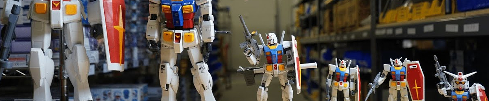
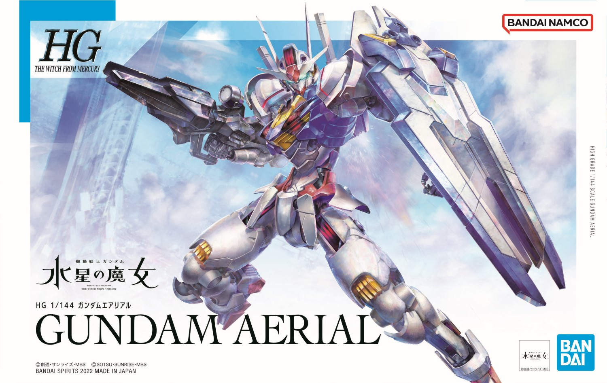
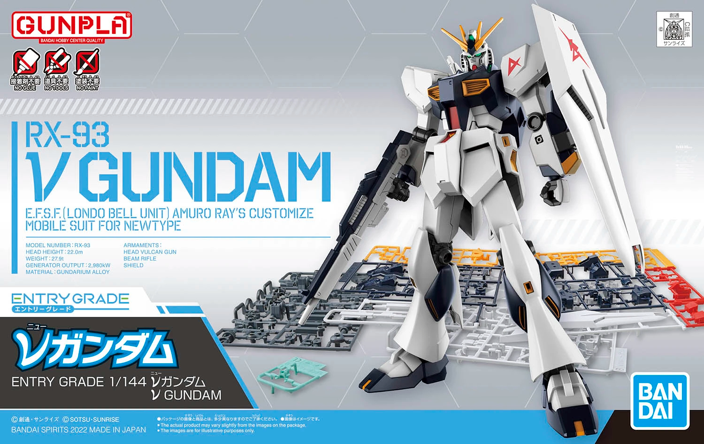
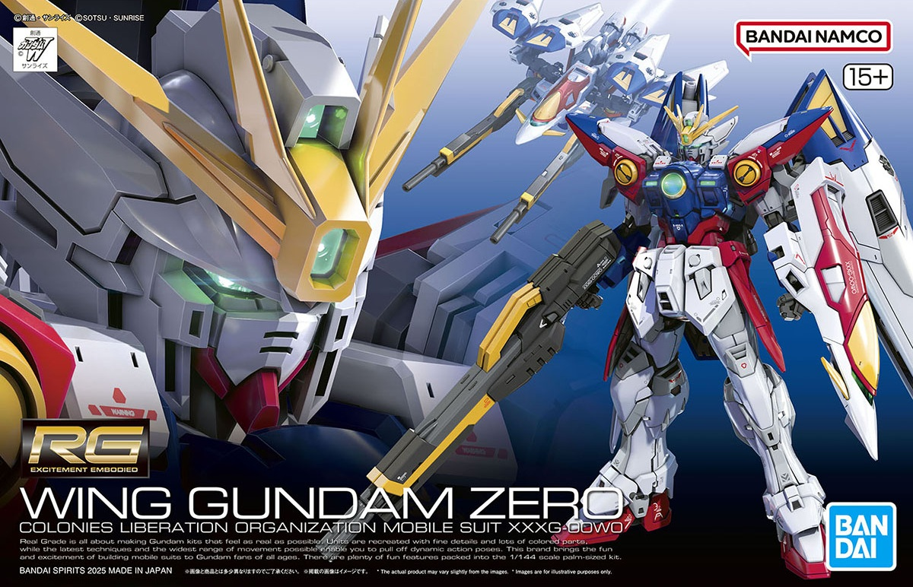
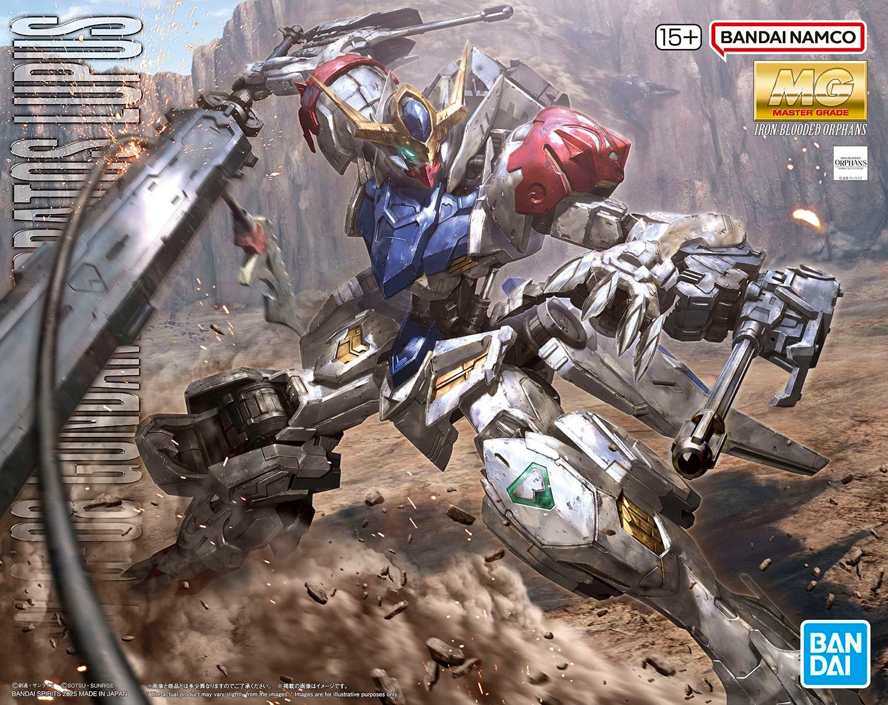
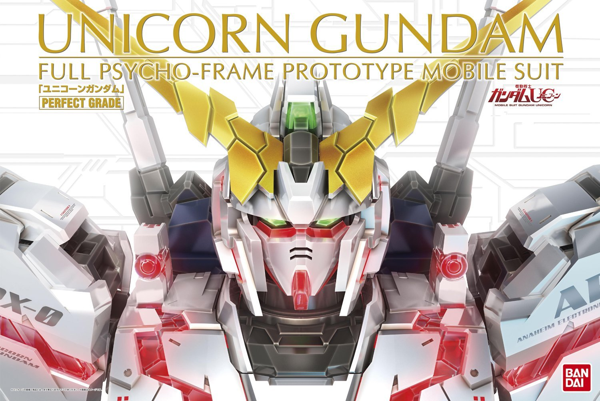
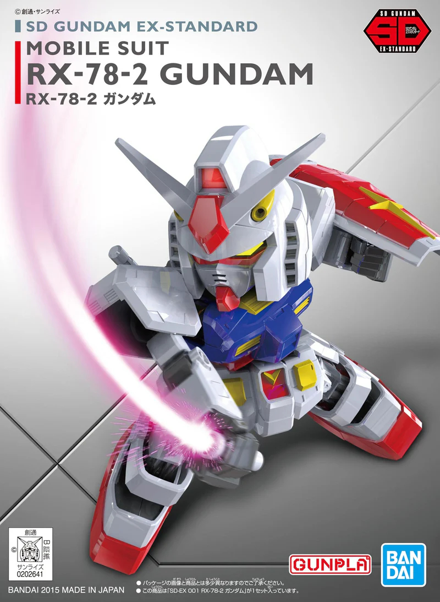

GUNPLA GRADES
AND SCALES
Banner Image Source: Mecha Warehouse, YouTube
Gunpla are divided into different grades, categorizing them based on their scale, complexity, and level of detail. The grade determines the complexity of the model, while the scale determines the size. This will be a list of and brief details regarding every relevant Gunpla grade.
| Grade | Scale | Rough Height* |
|---|---|---|
| High Grade (HG) | 1/144 | 12.5cm |
| Entry Grade (EG) | 1/144 | 12.5cm |
| Real Grade (RG) | 1/144 | 12.5cm |
| Master Grade (MG) | 1/100 | 18cm |
| Perfect Grade (PG) | 1/60 | 30cm |
| Super Deformed (SD) | N/A | 8cm |
*Rough heights based on respective grade's RX-78-2 Gundam kit
High Grade (HG)

High Grade The Witch From Mercury | XVX-016 Gundam Aerial
High Grades are the most common Gunpla line, featuring a very wide range of mobile suit designs from across Gundam media. A majority of high grades are 1/144 scale, though there are a few outliers.
Simple and affordable, High Grades are great for beginners and hobbyists alike, balancing both detail and ease of build.
High Grades often have suffixes which denote which line they come from (HGTWFM for The Witch from Mercury, HGUC for Universal Century, etc.) These correlate to the series of origin of the mobile suit, and doesn't hold bearing on the build itself.
Entry Grade (EG)

Entry Grade | RX-93 ν Gundam
Originally introduced in 2011, the Entry Grade line saw a revival in 2020 with 1/144 scale Gunpla. Entry Grades are not exclusive to Gundam; there exist kits for other franchises even outside of mecha.
Entry Grades have some of the lowest price points and require no tools to build, making them the perfect starting point for new builders.
Real Grade (RG)

Real Grade 43 | XXXG-00W0 Wing Gundam Zero
Real Grades feature high levels of detail and articulation in 1/144 scale with an advanced skeletal innerframe. With many small parts, they are recommended for experienced builders who prefer 1/144 scale kits but also value intricate details.
Real Grades are numbered by order of release. Note that early Real Grades 01-28 (releases before August 2018) are notorious for being fragile and difficult to work with. As such, they are recommended for advanced builders who know how to work around and fix their problem areas; Real Grades from 29 onward have largely resolved these issues.
Master Grade (MG)

Master Grade | ASW-G-08 Gundam Barbatos Lupus
Master Grades are larger kits at 1/100 scale, with intricate details such as improved surface detail, opening cockpits and skeletal frames with working hydraulics. Due to their size and complexity, they are comparatively more expensive.
Requiring more work to build and at a similar difficulty level to Real Grades, Master Grades are recommended for experienced builders who have the shelf space to display them.
Perfect Grade (PG)

Perfect Grade | RX-0 Gundam Unicorn
The biggest (and most expensive) models, Perfect Grades are the most detailed and complex Gunpla. Standing tall at a massive 1/60 scale, some will come with metal parts, screws, and pistons. Most Perfect Grades support LED lighting kits (sold separately).
Perfect Grades are recommended only for very advanced builders.
Super Deformed (SD)

Super Deformed | RX-78-2 Gundam
The oddball of the bunch, Super Deformed kits do not follow the scale system and feature “chibi” (cute) models at around 8cm tall. Super Deformed kits have relatively low part counts, and will use many color-correcting stickers.
Super Deformed kits are the most affordable kits, and are recommended for younger builders, quick builds, or technique practice.
Other Lines
The grades listed above are the most common Gunpla lines. However, there exist subcategories as well as specialized lines. Defunct and extreme niche lines are not listed for the sake of summary.
Subcategories:
Master Grade EX (MGEX)
A subcategory of Master Grade, they are 1/100 scale kits with details and gimmicks typically only found in Perfect Grades, as well as a fully gold-washed inner frame.
Master Grade Version Katoki (MG Ver. Ka)
A label under Master Grade, they are 1/100 scale kits featuring redesigns and reinterpretations by famous veteran mecha designer Hajime Katoki.
Perfect Grade Unleashed (PGU)
A subcategory of Perfect Grade, they are the pinnacle of Gunpla at 1/60 scale featuring diecast metal parts with extreme detail surpassing even Perfect Grade kits (and a price point to match).
Master Grade SD (MGSD)
An admittedly confusing name, they are SD Gundam designs with Master Grade technology condensed within, featuring the articulation and skeletal innerframes of MG kits.
Specialized Lines:
Reborn-One Hundred (RE/100)
RE/100 kits are models either too large or too obscure to justify an MG release, and are 1/100 scale kits with complexity similar to a High Grade.
Full Mechanics (FM)
Similarly to RE/100, Full Mechanics kits are 1/100 scale kits with complexity similar to High Grades. The moniker is used for models outside of the Gundam series' Universal Century timeline.
Mega Size Model (MSM)
Okay, I lied, THIS is the biggest Gunpla. At 1/48 scale, good luck finding anywhere reasonable to display these. Despite the large size, they are about as complex as High Grade kits and do not require tools to build.
No Grade (NG)
A catch-all term mainly for older Gunpla that don't fit within any other category.
RECOMMENDED ARTICLES
Confused about which Gunpla kit to begin with? Check out this article for some recommendations!